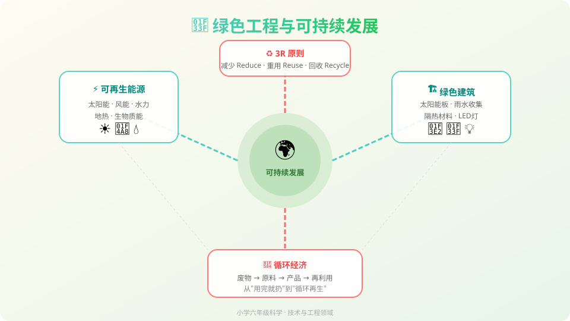

Gallery
v1.0.0 · skill v7.18
我们能不能既享受现代科技带来的便利，又不伤害地球？

地球上的资源是有限的，我们每天都在使用各种能源和材料来建造房屋、制造产品、点亮城市。现代生活离不开工程。
传统的工程方式消耗大量资源、产生污染，让河流变脏、空气变差、森林消失。我们的地球正在"生病"。
绿色工程用创新的方式设计可持续的解决方案——让我们既能享受现代生活，又能保护地球。这就是我们今天要探索的！
选一个你关心的问题，后面的内容会围绕它展开。
选择或输入后，本课会围绕你的问题展开。
选错了没关系，这只是为了看看你现在知道多少。
1. 下面哪种能源是可再生能源？
2. "3R原则"中的"减少"是什么意思？
3. 绿色建筑可能包含以下哪个？
想象一下：你要建一座桥。传统方式可能砍很多树、用很多水泥，造完之后河边全是灰。但如果用绿色工程的方法，你会先想：有没有不用砍树的办法？能不能用回收的钢材？建完后河边的植物能不能恢复？
把下面的能源拖到正确的分类区域！
拖到这里 ↑
拖到这里 ↑
看看滑板运动员怎么在"能量滑板公园"里上上下下——位置越高，势能越大；滑下来时，势能变成动能！可再生能源也是这样，把自然界的能量转换成我们能用的电。
💡 拖动滑板运动员到高处，松手观察：势能（高度）怎么变成动能（速度）？
把下面的物品拖进正确的3R桶里！
点击下方的绿色元素，把它们加到建筑上，打造你的绿色建筑！
选择至少3个绿色元素，让你的建筑更环保！
学校要新建一座食堂，校长希望它是一座绿色建筑。作为绿色工程师，你会提出哪些建议？
第一题：食堂的电力应该用什么来源？
第二题：食堂的剩饭剩菜怎么处理？
第三题：食堂装修用什么材料最环保？
说出3种可再生能源，并解释为什么它们"用不完"。
画一张图：把你家改造成绿色建筑，标注每个绿色元素的作用。
调查你学校的一个环境问题，用3R原则提出一个改善方案。
查看本节课的前置知识、后续拓展和同域知识节点。点击节点可以跳转到相关课件。
AI 学伴会帮你诊断卡点，给你最小的提示，让你自己想明白。点击左下角的 💬 按钮开始对话。
先找到你哪里不懂，而不是直接告诉你答案
给刚刚够用的提示，让你自己想出答案
让你用自己的话再说一遍，确认你真的懂了